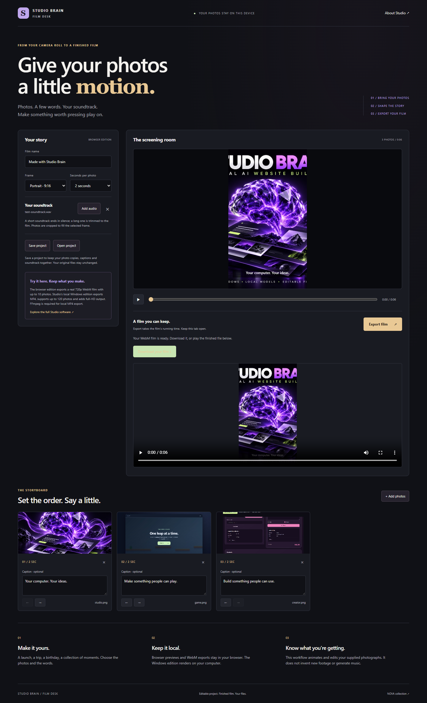

01 / CREATION SOFTWARE
Studio Brain
& Film Desk
Turn the things you have into something you can share.
Studio Brain brings local website projects and creative tools together. Film Desk gives visitors a direct way to try the work: arrange photos, add captions and a soundtrack, then export a film.
- THE EXPERIENCE
- Photos → storyboard → preview → finished file.
- THE DELIVERY
- Free browser Film Desk. Windows creation software with editable project files.

ACTUAL WORKSPACE / FILM DESK